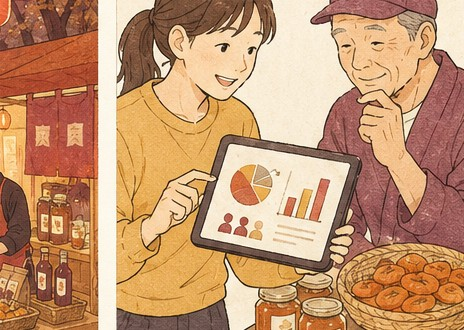

Test Market 検証販売について
検証販売について
検証販売は、つくり手を支援するための“手段の一つ”。地方の逸品を都市の現場で実際に売り、反応や“売れた理由”をデータにして生産者に返します。
Why On-Site なぜ現場で売るか
数字や想像ではなく、実際にお金を払って買う瞬間にこそ「売れる理由」が現れます。だから私たちは、まず現場に立ちます。
食品・飲料・酒類のEC化率は、まだ4.3%。
多くの食品は、いまもリアルな接点から選ばれています。
だから私たちは、ネットに載せる前に、まず現場に立ちます。誰が手に取り、何に反応し、いくらなら買うのか。人と向き合って初めて見える事実を拾い、つくり手に返して、次の売り方まで一緒に考えます。
出典：経済産業省「電子商取引に関する市場調査」2023年（食品・飲料・酒類のEC化率）
3 Steps 検証販売の流れ
都市の現場で売り、反応をデータに変え、つくり手へ還元する。3つのステップで進めます。

Sell On Site
都市の現場で売る
首都圏のマルシェやイベントに学生が立ち、地方の逸品を消費者へ直接届ける。背景を語りながら、実際に買ってもらう。
Capture Reactions
反応・データを取る
どんな世代が手に取り、何に心が動いたか。説明の有無で売れ方はどう変わるか。現場の反応と“売れた理由”を記録する。
Return to Maker
生産者に還元する
集めた事実を簡易レポートに整理し、つくり手へお返しする。次の一手に使える形にして返すまでが、検証販売です。
Feedback データを、つくり手へ
現場で得た声と数字は、しまい込まず生産者へ返します。届けて、対話して、次の改善につなげる。それが私たちの役割です。

Our Stance これは支援の一手段
検証販売は目的ではありません。地方の“いいもの”を都市へ流通させ、つくり手を支え、地域を活性化する。その大きな流れの中の一手段です。
私たちが目指すのは、つくり手が自分の力で売り続けられる状態です。検証販売はその入口にすぎません。イベント・発信・販路づくりまで含めた支援の全体像は、支援内容のページでご覧いただけます。